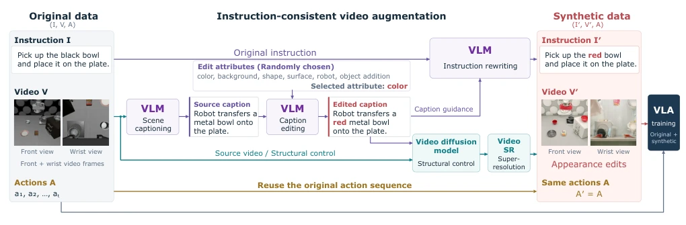
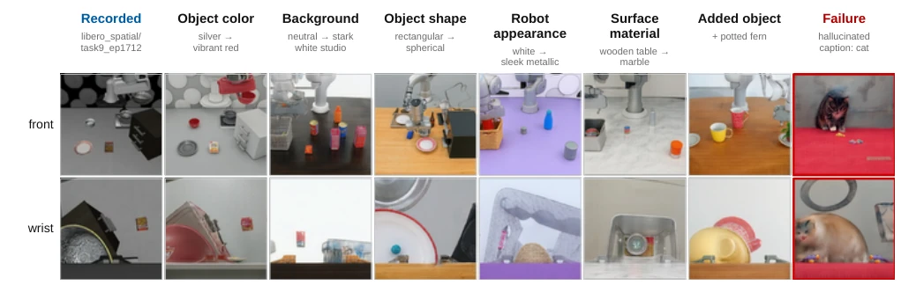
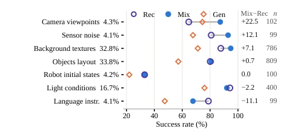
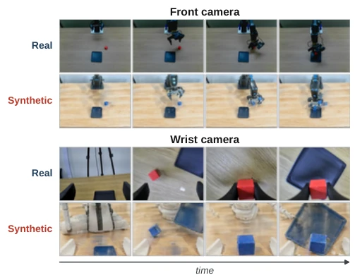
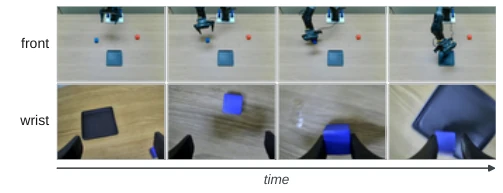
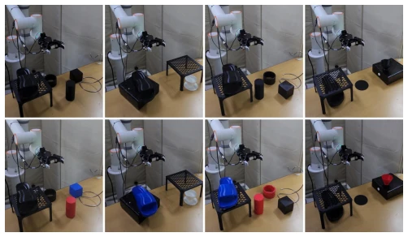

This paper attempts to use generative models to perform 'skin swapping' on real robot demonstrations, saving the trouble of re-collecting data. The core of ReShoot lies in utilizing an edge-conditioned video generation model to randomize visual attributes such as object color and background while keeping action labels unchanged. This approach is indeed clever, shifting the burden of data collection to computational power. However, structural consistency in generated videos is a potential hazard; although edge conditions constrain the contours, pixel-level drift is inevitable. More interestingly, instruction rewriting relies entirely on the edited caption rather than the generated video; if the video generation and caption do not match, the model learns 'fake instructions'. Experimental results are robust in simulation, with significant improvement in color generalization on physical robots, but training with pure generated data performs poorly, indicating that real data anchors remain crucial. Overall, it is a practical engineering trick, but still far from perfect 'what you see is what you get'.
Imitation learning strategies often overfit due to the singularity of visual conditions in training data; once object color or background changes, performance drops sharply. The solution is usually to collect more demonstrations from new scenes, but this is extremely costly, requiring repeated robot operation and human supervision [6]. Data shows that scene diversity is more important than the number of demonstrations [10]. Existing generative augmentation methods such as ROSIE [14] or GenAug [15] are mostly based on single-frame editing, making it difficult to guarantee video temporal consistency and multi-view synchronization. Other methods infer actions through video generation [21]-[23], but action labels are inferred rather than real records. ReShoot aims to solve this pain point: extending visual diversity through generative re-rendering without re-collecting data, while retaining original action labels to avoid errors brought by action inference.
The overall process is divided into scene description, editing, re-rendering, super-resolution, and instruction rewriting. First, the VLM performs scene description on the original demonstration and randomly edits one attribute (e.g., color, background). Next, using edge maps (Edge Maps) as structural conditions, the video generation model (Wan2.2) redraws the front and wrist view videos, ensuring the action structure remains unchanged. The super-resolution module restores clarity. Finally, the VLM rewrites the instruction based on the edited description. Innovations lie in: 1) Edge condition control: Using HED edge maps to constrain the structure of generated videos, ensuring action trajectories are decoupled from visual changes; 2) Action label reuse: Directly following the original action sequence, no need for re-annotation; 3) Multi-view synchronization: Generating front and wrist views simultaneously to maintain scene consistency. This design allows a single demonstration to generate multiple visual variants, and the training objective requires no modification.

Fig. 1. Overview of ReShoot. A recorded demonstration provides the instruction, the third-person and wrist videos, and the actions. A vision-language model captions the scene and edits one attribute of the caption; a video generation module conditioned on the edge maps of the recorded frames redraws both views to match the edited caption, a super-resolution module restores sharpness, and the instruction is rewritten to match. The actions are reused unchanged.
Validated on LIBERO and LIBERO-Plus benchmark tests, as well as two physical robot platforms (AgileX PiPER, FAIRINO FR5). Baselines are Rec trained only with original data and Gen trained only with generated data. The main metric is task success rate. Results show that mixed training (Mix) performs on par with pure original data on LIBERO (96.5% vs 96.9%), but robustness improves by 3.2 percentage points in LIBERO-Plus perturbation tests. In physical robot experiments, for unseen object colors, the pure original data strategy success rate is 0%, while ReShoot enhanced improves to 42.9% and 47.5%. Ablation studies show that pure generated data training performs poorly (Gen is about 20 points lower than Rec), proving the importance of real data anchors.

Fig. 2. Re-rendered LIBERO demonstrations, third-person (top) and wrist (bottom) views. From left, a recorded frame, its re-rendering with the object color changed, one re-rendering for each of the other five attribute types as labeled, and a failure case.

Fig. 3. Success rate (%) by LIBERO-Plus perturbation dimension. Percentages after the dimension names are their shares of the evaluated episodes; the right-hand columns give Mix minus Rec in percentage points and the number of episodes n.

Fig. 4. Robot A. A recorded episode (rows 1 and 3) and its re-rendering (rows 2 and 4); third-person view above, wrist view below.

Fig. 5. Robot A. Rollout of the augmented policy under the appearance shift; third-person view above, wrist view below.

Fig. 6. Robot B. Initial scenes of the four tasks with black objects (top) and recolored objects (bottom).